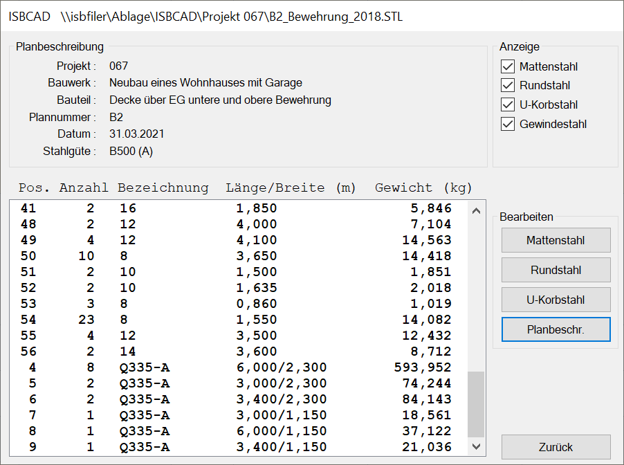
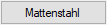
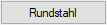
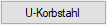
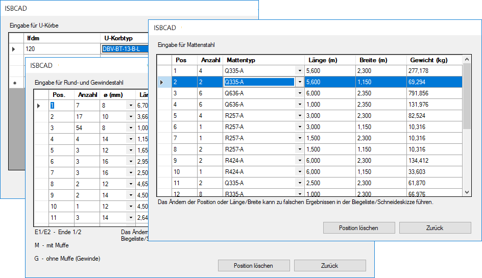
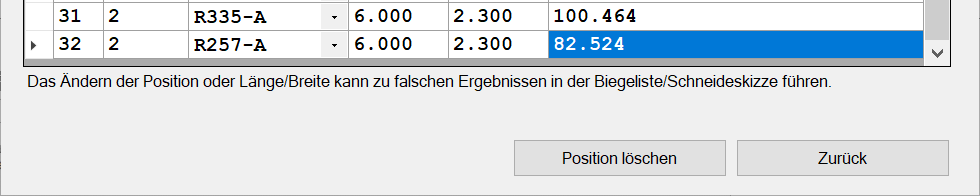
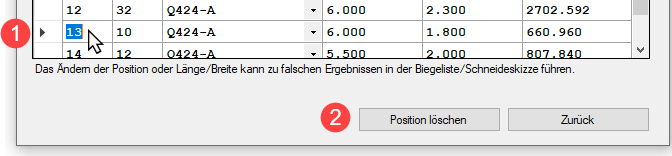
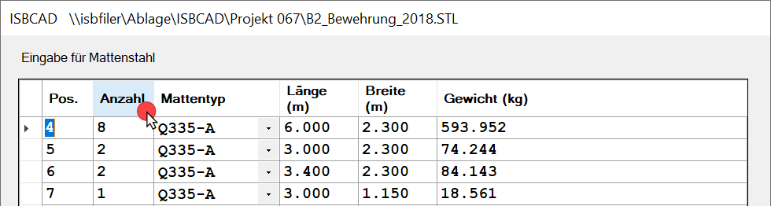
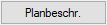
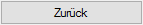

.png)
Windows-Startmenü → Programmgruppe ISBCAD 2026 → Hauptmenü → Stahllisten.
Diese Funktion ist im Stahllisten-Dialog verfügbar, der über das ISBCAD Hauptmenü geöffnet wird. Sie können die Bewehrungsdaten der Datei anzeigen und bearbeiten, die in der Dateiliste des Dialogs Stahllisten markiert ist.
Beachten Sie, dass Änderungen in der markierten Datei gespeichert werden! Nutzen Sie für temporäre Änderungen die Funktion Liste bearbeiten.
Optionen im Dialog "Einzelliste"
 |
Planbeschreibung
Allgemeine Projektinformationen. Anzeige der Einträge aus der Planbeschreibung. [Konst3 | PlanBe].
Anzeige
Wählen Sie durch Setzen von Haken, ob Matten-, Rund-, Gewinde- oder U‑Korbstahl im Anzeigefenster angezeigt werden soll.
Mattenstahl; Rundstahl; U‑Korbstahl; Gewindestahl
Die ausgewählten Listen werden nacheinander in der Tabelle angezeigt.
Bearbeiten
Sie können die Listen konfigurieren, z. B. Werte ändern, Positionen hinzufügen oder löschen.
Die vorgeschlagenen Werte und Bezeichnungen sind in den Betonstahl-Tabellen definiert und können dort editiert werden.

;
;
Öffnet jeweils einen Dialog, in welchem Positionen erzeugt, gelöscht oder andere Angaben gemacht werden können.
 |
Neue Position eingeben
Klicken Sie auf ein Eingabefeld in einer Zeile, um einen Wert einzutragen. Um Werte aus Listen auswählen zu können, klicken Sie auf  . Wählen Sie anschließend den entsprechenden Eintrag.
. Wählen Sie anschließend den entsprechenden Eintrag.
Mit der Tab-Taste gelangen Sie in das nächste Eingabefeld. Geben Sie alle weiteren Daten ein.
Position hinzufügen
Scrollen Sie an das Listenende. Am Listenende markiert ein Stern-Symbol die freie Zeile. Klicken Sie in die Zelle und geben Sie eine beliebige Positionsnummer ein, sofern diese noch nicht vergeben ist. Mit der Tab-Taste gelangen Sie in das nächste Eingabefeld. Geben Sie alle weiteren Daten ein.
 |
Position bearbeiten
Klicken Sie im geöffnetem Dialog auf ein Feld in einer Zeile, um diesen Wert zu ändern. Wechseln Sie in das nächste Feld, indem Sie die Tab-Taste drücken. Mit der Eingabetaste wechseln Sie in die nächste Zeile.
Wenn Sie z. B. einen zu großen Längenwert eingeben, werden Sie nach dem Drücken von Zurück im Einzellisten-Dialog in einer Meldung darauf hingewiesen. Korrigieren Sie in diesem Fall den entsprechenden Eintrag, um Fehler in der Stahlliste zu vermeiden.
Position löschen
Klicken Sie einen beliebigen Eintrag in der Tabellenzeile an. Klicken Sie anschließend auf Position löschen.
 |
Positionen sortieren
Um die Tabelle nach einer bestimmten Eigenschaft zu sortieren, klicken Sie auf die Spaltenüberschrift. Sie können entweder absteigend [ ] oder aufsteigend [
] oder aufsteigend [ ] sortieren. Um die Sortierreihenfolge zu ändern, klicken Sie die Spaltenüberschrift erneut an.
] sortieren. Um die Sortierreihenfolge zu ändern, klicken Sie die Spaltenüberschrift erneut an.
 |

Öffnet einen Dialog, in dem die Einträge aus [Konst 3 → PlanBe] angezeigt werden. Sie können die Einträge editieren. Die Angaben unter [Konst 3 → PlanBe] werden dabei nicht überschrieben.

Klicken Sie auf diesen Schalter, um zum Einzellisten-Dialog zurückzukehren.
Zurück (Dialog Einzelliste)
Nach Fertigstellung aller Eingaben klicken Sie auf diesen Schalter, um zum Stahllisten-Dialog zurückzukehren. Hier können Sie die Einzelliste ausgeben.
Falls Änderungen vorgenommen wurden, werden Sie gefragt, ob die Eingaben übernommen werden sollen. Klicken Sie auf Ja, um die Stahlliste zu generieren. Nach der Übernahme der Eingaben wird der Dialog Stahlliste geöffnet.
Siehe auch:
Zugehörige Referenzen: